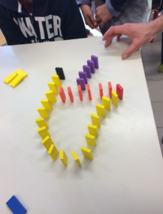
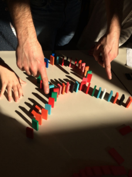
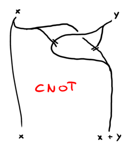
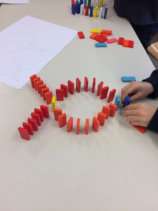
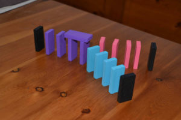

{λ1} Come costruire porte logiche con il domino

Protocollo di laboratorio
Quando scriviamo un messaggio su WhatsApp, o scattiamo una foto con lo smartphone, trasmettiamo informazioni secondo una successione di ragionamenti. Com’è possibile, però, che questi ragionamenti siano eseguiti da un oggetto? In questo laboratorio costruiamo alcuni ingranaggi fondamentali della logica del computer usando i tasselli del domino.
Scopo
L’obiettivo del laboratorio è far comprendere come alcune operazioni logiche di base possano essere tradotte ed eseguite da congegni meccanici. Questo porta a riflettere su vari aspetti fondamentali della computazione, tra cui la composizione delle operazioni, la loro reversibilità (logica e fisica), il costo energetico, e la nozione di universalità computazionale.
Partecipanti
Età consigliata 9 – 99.
Materiali e costi
- Pezzi DOMINO in quantità (circa 30€, consigliati Timfuis 1200 pezzi o Dominolocity 1100 pezzi);
- Una lavagna o simili;
- Materiale di cancelleria.

Una porta AND. Il primo tassello viola e il primo rosa sono gli input, quello nero è l’output. Il tassello nero cade solo se entrambi i tasselli di input vengono fatti cadere.
Una porta XOR. Se entrambi gli input cadono si “inciampano” nel mezzo l’uno con l’altro.
Descrizione
Il laboratorio si divide in tre momenti, uno teorico (30-40′), uno pratico (1h), e uno di discussione (20’+).
1) Introduzione alle operazioni logiche. Si discute la codifica binaria delle operazioni logiche (operazioni Booleane con Vero / Falso) e la possibilità di comporre più operazioni. Si ragiona sul fatto che la codifica binaria può essere materialmente resa da diversi meccanismi, e si invitano lə partecipanti a pensare a qualche oggetto o processo nella loro vita quotidiana che potrebbe tradurre i valori di verità e qualche operazione logica. Finalmente si presenta il materiale DOMINO e si stimolano lə partecipanti a pensare a come potrebbe essere utilizzato per creare porte logiche. Si dovrebe arrivare a una codifica di Vero / Falso in termini di “cadere / non cadere”.
2) Costruzione di alcune porte logiche. Si invitano lə partecipanti (eventualmente divisə in gruppetti) a pensare a un semplice circuito DOMINO che realizzi un’operazione tra certi tasselli di input e certi tasselli di output. Si parte dalla porta logica OR, che è abbastanza intuitiva. Quando tuttə sono al passo, si propone di costruire XOR, che è meno semplice, e AND, ancora più complessa. E la porta NOT? Si dovrebbe arrivare alla conclusione che è impossibile, ma che magari è possibile realizzarne una versione “assistita”: la porta CNOT. Infine, se il tempo lo permette, si realizza la porta CCNOT (porta di Toffoli); con un po’ di ragionamento si arriva a capire che è possibile realizzare CCNOT componendo CNOT e AND.
3) Discussione. Se l’attenzione lo permette, si spiega in che senso le porte CCNOT sono universali, ovverosia se messe in circuito permettono la realizzazione di qualsiasi funzione Booleana. Inoltre, se lə partecipanti hanno anche frequentato il laboratorio Come costruire un calcolatore meccanico con LEGO e biglie, è possibile far notare come operazioni logiche e operazioni matematiche (la somma) siano la stessa cosa, per esempio mostrano che XOR non è altro che la prima cifra della somma binaria di due numeri. Infine, se il tempo lo permette, si può affrontare la costruzione di un addizionatore meccanico a due o tre bit.

Schema di funzionamento di una porta CNOT (la doppia stanghetta significa che una catena di domino interrompe l’altra; l’incrocio invece si può realizzare tramite un ponte o coordinando i tempi). Tolto il ramo $x to x$, rimane una porta XOR, e infatti $1 ,mathrm{XOR}, y = mathrm{NOT}, y$.
Considerazioni
Una volta esposta l’idea e gli obiettivi, a meno di richieste di aiuto dirette consigliamo a chi conduce il laboratorio di interferire il minimo possibile nella realizzazione delle porte logiche per dar spazio alla massima creatività possibile.
La ricerca di soluzioni personali spesso porta ad approfondire questioni concettuali e materiali importanti:

Una soluzione proposta per la porta XOR. Funzionerà? Il principio logico è lo stesso di quello già mostrato sopra, ma in questo caso serve molta precisione nel cronometraggio e nel bilanciamento del domino giallo!
Inoltre, spesso non c’è un’unica soluzione a un dato problema:

Una soluzione proposta dallə partecipanti per una porta AND. Se solo uno dei due input (tasselli neri a destra) viene fatto cadere, il peso non è sufficiente a far cadere l’impalcatura viola. Da notare che questa soluzione del problema ricalca lo schema della porta OR, ma sfrutta la terza dimensione e considerazioni di stampo materiale (peso degli oggetti, sincronizzazione degli eventi).
Infine, spesso succede che alcunə partecipanti usino il materiale per giocare e creare manufatti di propria ispirazione. Come eXtemporanea incoraggiamo fortemente queste pratiche, perché crediamo che i nostri laboratori possano stimolare e ospitare diversi tipi di intelligenze, anche lontane dallo scopo presunto del laboratorio.
Realizzazioni
- Scuola Elementare Fortuzzi, Classe V A, autunno 2018.
- Brescia, 2021
Altre letture
- https://en.wikipedia.org/wiki/Domino_computer, sulla costruzione di macchine addizionatrici a partire dal DOMINO;
- https://tomate.wordpress.com/2017/12/15/teaching-3-what-is-a-bit-and-what-is-a-computer/, considerazioni su una realizzazione del laboratorio